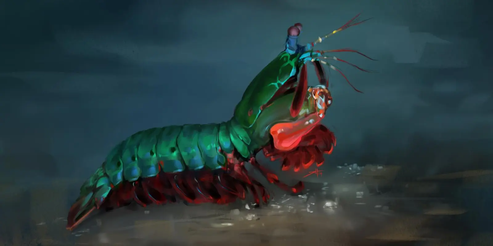

Fatos sobre o Stomatopoda
Odontodactylus scyllarus
Classificação Científica
| Reino: | Animalia |
| Filo: | Arthropoda |
| Subfilo: | Crustacea |
| Classe: | Malacostraca |
| Subclasse: | Hoplocarida |
| Ordem: | Stomatopoda |
Olhos do Futuro
Os olhos são testemunhos da criatividade da evolução. Todos eles fazem as mesmas coisas básicas - detectam a luz e a convertem em sinais elétricos - mas de uma variedade tão maravilhosa de maneiras. Existem olhos simples e compostos, lentes bifocais e rochosas, espelhos e fibras ópticas. E há olhos que são tão estranhos, tão constantemente surpreendentes, que depois de décadas de pesquisa, os cientistas mal descobriram como funcionam, muito menos por que evoluíram dessa maneira.

Fato sobre o Tamanho e Soco
O camarão mantis é um dos animais com um dos mais fortes socos de todo o planeta. Esse artrópode que possui pouco menos de 12 centímetros é capaz de quebrar conchas e até vidros de aquário com seus membros, sendo um dos animais proporcionalmente mais fortes de todo o mundo.
A força de um soco do camarão mantis é de 1500 newtons ou cerca de 152 quilos, enquanto o soco médio de um ser humano está na casa dos 3300 newtons ou 336 quilos. Ou seja, eles são muito menores que a gente, mas dão socos com a metade da nossa força.
